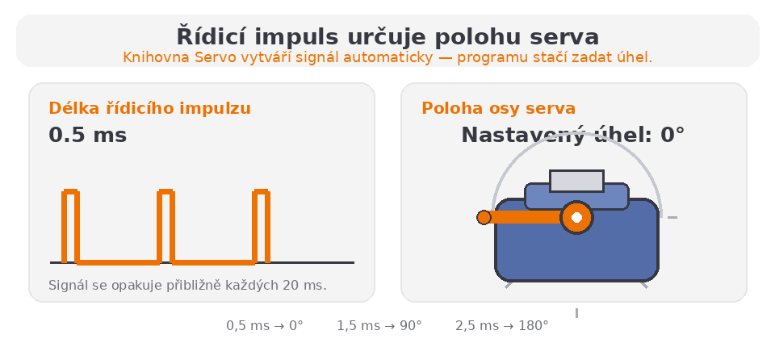

Praxe – Arduino | 3. ročník
V této kapitole se naučíme ovládat modelářský servomotor pomocí Arduina. Servomotor se nepoužívá hlavně pro trvalé otáčení, ale pro přesné nastavení polohy.
Servomotor je převodový motor, který dokáže natočit svou osu do přesně určené polohy. U běžného modelářského serva je pracovní rozsah obvykle přibližně 0 až 180°.
Požadovaný úhel se servu předává elektrickými impulsy z řídicí jednotky, například z Arduina. Servo zároveň sleduje skutečnou polohu své osy a v případě potřeby motor automaticky zapne, aby dosáhlo nastavené hodnoty.
Uvnitř serva spolupracují motor, převodovka, potenciometr a řídicí elektronika.
Servo porovnává cílový a skutečný úhel. Dokud se hodnoty neshodují, upravuje polohu osy.
Modelářské servo má obvykle tři vodiče. Barvy se mohou u jednotlivých výrobců lišit, ale u běžného serva SG90 se často používá hnědý vodič pro zem, červený pro napájení a oranžový pro řídicí signál.
Pozor na napájení: Jedno malé servo obvykle při jednoduchém pokusu funguje z 5 V Arduina. Více serv nebo větší servo však může odebírat příliš velký proud. V takovém případě použijte samostatný zdroj a propojte jeho GND s GND Arduina.
Servo se neřídí běžnou hodnotou analogWrite(). Arduino mu pravidelně posílá řídicí impulsy. Důležitá je především délka impulzu, která určuje požadovaný úhel.
Jeden řídicí cyklus trvá přibližně 20 ms, což odpovídá frekvenci asi 50 Hz. Pro názornost použijeme rozsah 0,5 až 2,5 ms; skutečné krajní hodnoty se mohou u různých typů serv mírně lišit.

Nejprve do programu vložíme knihovnu Servo a vytvoříme objekt, který bude představovat naše servo. Funkcí attach() nastavíme řídicí pin a funkcí write() požadovaný úhel.
#include <Servo.h>
Servo servo1;
void setup() {
servo1.attach(9);
}
void loop() {
servo1.write(0);
delay(800);
servo1.write(90);
delay(800);
servo1.write(180);
delay(800);
}Hodnota z potenciometru má rozsah 0 až 1023, zatímco servo očekává úhel přibližně 0 až 180. Pro převod mezi těmito rozsahy použijeme funkci map().
int hodnota = analogRead(A0);
int uhel = map(hodnota, 0, 1023, 0, 180);
servo1.write(uhel);Funkce map() převede hodnotu z jednoho rozsahu do druhého:
#include <Servo.h>
Servo servo1;
const byte pinServo = 9;
const byte pinPotenciometr = A0;
void setup() {
servo1.attach(pinServo);
}
void loop() {
int hodnotaPotenciometru = analogRead(pinPotenciometr);
int uhel = map(hodnotaPotenciometru, 0, 1023, 0, 180);
servo1.write(uhel);
delay(15);
}